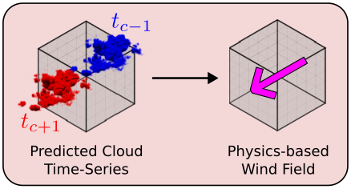
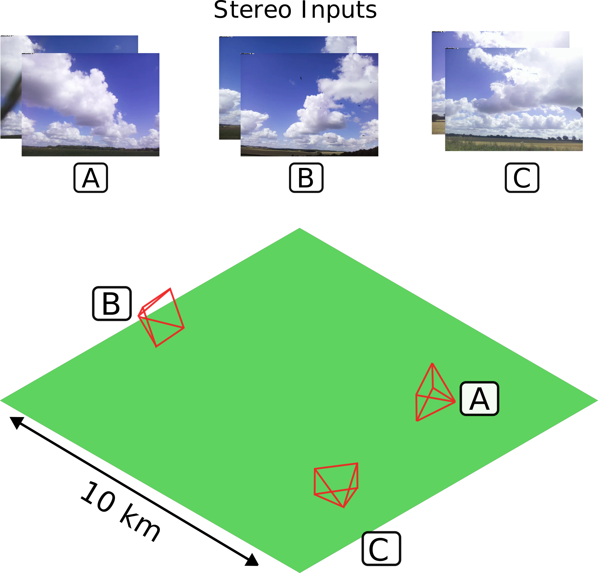
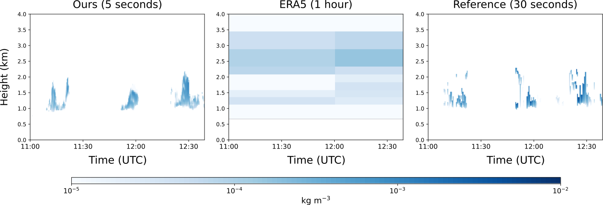

Concatenate sparse voxels with backprojected DINOv2 features
Softmax along height → scale to preserve original LWP
$\mathcal{L}_{3D} = \| \rho - \hat{\rho} \|_1$
Step 3: Wind Retrieval

At inference, estimate LWC at
multiple time steps and extract wind by tracking
cloud motion.
3D LWC at time t→LWC 2D slice at height z, time tCoTracker3 →Horizontal Wind at height z, time t
Key advantage over satellites: tracking is done
on full 3D LWC fields rather than 2D imagery, giving
height-varying horizontal wind profiles.
Dataset
Terragen Pre-training
Procedurally generated scenes (pre-training only)
Physics-based Training
Data
Large-eddy simulations (MicroHH) rendered in
Blender
Stats: Only shallow cumulus scenes. 5 km
× 5 km area, 25 m voxel size, 200
× 200 × 160 grid. 15,000 training images from 6 cameras. 3
LES scenarios (ARM, Cabauw, RICO).
Results — Qualitative
Trained on
simulated data, tested on real-world
images (12 cumulus days, 17 hours) only shallow cumulus clouds.

Setup: 3 stereo camera pairs, 2-month deployment
Top-down renders vs. Sentinel-2 and MODIS satellite imagery
Cloud4D estimates volumetric properties every 5
seconds. (Sentinel-2: 10m | every 5 days. MODIS: 25m | once per day)
Results — Radar Comparison
They compare their 3D LWC
along a single vertical column at the radar location
against radar retrievals (30 m height resolution, every 30 s).
1D LWC comparison with radar retrievals

1D LWC profile vs. radar retrievals over time
looks good 👍
way better resoltuion than ERA5 and aligned with radar
retrievals.
Results — Quantitative
Comparison against radar
retrievals over 12 cumulus days. VIP-CT is a satellite-based baseline.
Method
Occ (F1) ↑
LWC (g m−3) ↓
LWP (kg m−2) ↓
CBH (m) ↓
CTH (m) ↓
VIP-CT
0.40
0.13
0.39
791.23
1021.49
Cloud4D (ours)
0.70
0.03
0.06
189.58
295.77
Cloud4D retrieves LWC with < 10% relative error
compared to radar, over a 5 km × 5 km area.
Ablation — Fewer Cameras: Dropping camera
pairs degrades CBH/CTH accuracy significantly, while LWC/LWP are
more robust.
Discussion
As ML/CV researchers: did the motivation convince you?
Was the atmospheric science easy to follow, or feel you missed something?
Why not learn the 3D structure directly (skip step a)?
Why DINOv2 and not a transformer trained from scratch?
My guess: for
nowcasting you need an update every ~5 s or a bit less → step a) is very fast
(2D CNN on a flat feature volume). This also makes step b) easier:
the coarse 3D initialization means you only attend over
sparse voxels
(M ≪ NxNyNz), which is far
cheaper than a dense transformer over the full grid.
Thank you for listening
Cloud4D — NeurIPS 2025 Spotlight
Paper · Code · Dataset available at
cloud4d.jacob-lin.com